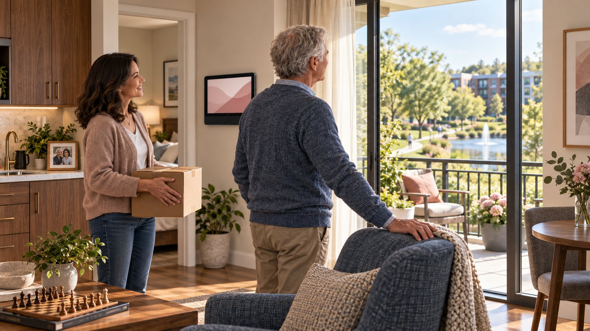

Story Two · The Community
One Tour
One Tour
Download chapterThe Community
Download full storyThe open house began with name tags and coffee in a lobby that looked deliberately unlike a medical facility.
No reception desk. No television bolted into a corner. No antiseptic smell.
Just comfortable chairs, tall windows, and a table covered with pastries Ron had already decided were too small.
“You can take two,” Maya said.
“I shouldn’t have to.”
A woman near the windows welcomed everyone and asked the group to introduce themselves before the tour began.
Maya went first.
“I’m Maya, and this is my dad, Ron. He still lives in his own home. We’ve been using Livonne Care for several years, and it’s helped him stay there longer than we thought he could.”
“Comfortably,” Ron added.
“Comfortably,” Maya agreed. “But he’s spending more time alone now, so we’re looking at what might come next.”
“She thinks I need more friends.”
“I think paying a home aide to watch football with you is an expensive way to have a friendship.”
A few people laughed.
Ron looked around the group.
“She’s been using that line all week.”
The woman leading the tour smiled.
“Well, Ron, nobody is going to ask you to decide anything today. We’re just going to show you how the community works.”
“One tour,” Ron said.
“One tour.”
They began with one of the apartments.
It had a living room, a bedroom, a private bathroom, and a small kitchen with enough room to cook a real meal. The furniture belonged to the community, but only because this was the model apartment. Residents brought their own chairs, photographs, dishes, books, and whatever else made the place feel like theirs.
Ron opened one of the kitchen cabinets.
“Full-sized coffee cups,” he said.
“We consider those essential infrastructure,” the tour guide replied.
“That’s the first sensible thing I’ve heard.”
Mounted on the living-room wall was a dark thirty-two-inch screen. It looked familiar enough that Ron stopped in front of it.
“This is the Livonne Surface AIO,” the guide said. “It’s the primary Livonne surface in each resident’s apartment.”
The screen woke into a simple demonstration view.
“For someone moving in without Livonne, this is where their assistant begins learning how they want to be supported. For someone like Ron, who already has Livonne Care, his existing continuity moves with him.”
“My continuity,” Ron repeated.
“Your assistant. Its voice and appearance. Your routines, preferences, permissions, family relationships, and the things you’ve chosen to let it remember.”
Ron looked at Maya.
“So I don’t have to train another one?”
“No,” the guide said. “You’re not starting over.”
The screen displayed a sample morning view: the date, weather, breakfast hours, and two upcoming activities. Everything was large enough to read from across the room.
“The apartment is new,” the guide said. “The relationship is not.”
Ron stepped closer.
“And where does all of that live? My whole life goes into some computer downstairs?”
“Your private continuity stays anchored to you and your room,” she said. “The Surface keeps your immediate context close. The community has shared infrastructure, but it does not get to absorb your personal memory.”
She touched the screen, and a simple diagram appeared.
One apartment on one side.
The shared community on the other.
A clear boundary between them.
“The shared system is called the Community Hub. It coordinates the place—dining, transportation, activities, maintenance, staff workflows, and the shared surfaces around the property. It does not turn every resident into one big pool of information.”
“So the dining room knows I’m coming,” Ron said, “but it doesn’t know what I talked about in my bedroom.”
“Exactly.”
“And the staff?”
“They see what they need for the job they’re doing. If you ask for maintenance, maintenance gets the request and the information needed to handle it. If you ask for a nurse, the appropriate staff member receives that request. Neither one automatically gets access to the rest of your life.”
Ron nodded toward the diagram.
“Who decided that?”
“You do. The community has safety and operating rules, but your personal permissions move with you. You and your family don’t have to rebuild them just because your address changes.”
That seemed to land.
Not enough for Ron to admit it, but enough that he stopped looking for the next flaw.
The guide opened a drawer beneath the Surface and removed a narrow wristband.
“This is the Care Band.”
Ron frowned.
“I’m not wearing a hospital bracelet.”
“It isn’t one.”
She handed it to him.
It looked closer to a simple watch band, without a screen demanding his attention.
“The band helps Livonne recognize you when you choose to use shared parts of the community. It can handle identity, access, personalization, and communication. It can also give you a quick way to ask for help.”
“So it tracks me.”
“It can provide basic activity and location signals if you permit them. But it isn’t broadcasting your private life around the property, and it isn’t a medical device. Its primary job is to connect you to the community without making you identify yourself and set everything up again every time you leave your apartment.”
Maya looked at Ron.
“That could keep you from losing your keys.”
“I don’t lose my keys.”
“You kept them in the refrigerator last month.”
“I found them.”
The guide wisely continued.
“For the demonstration, we can give the band a temporary tour profile. Just your name and anything you want the shared surfaces to know while you’re here.”
Ron slipped it onto his wrist.
“Football,” he said. “Chess. Coffee. No bingo.”
The guide entered the selections.
“You know,” Maya said, “you’ve never actually tried bingo.”
“I’m protecting the possibility that I might still have standards.”
They left the apartment and walked toward the community spaces.
At the end of the hall, a wall-mounted Livonne Surface showed a general map of the property. Dining was to the left. The activity rooms were ahead. The walking path circled the pond and returned near the garden.
As Ron approached, the display changed.
The map remained, but the information beside it reorganized itself.
Welcome, Ron.
Football watch party. Sunday at 2:00.
Open chess tables. Weekdays after lunch.
Dining room coffee available all day.
Ron read the screen.
“No bingo.”
“You told it what mattered to you,” the guide said. “It adjusted the public community view around that.”
Maya stepped forward beside him.
The display returned to the general tour map.
“It doesn’t know me,” she said.
“Not through Ron’s band. If you were registered as an approved visitor, it could recognize your own phone or visitor credentials. But it would still show you a visitor experience, not Ron’s private dashboard.”
A resident walking toward them raised her wrist slightly as she approached the Surface.
The screen changed again.
The map enlarged. The text became higher contrast. An arrow pointed toward the art room.
“Thank you,” the woman said to the Surface.
Then she looked at the tour group.
“Pottery,” she explained. “I can never remember which room they’ve stolen for it.”
“It’s been the same room for six months,” the guide said.
“That doesn’t mean they haven’t stolen it.”
The resident continued down the hall.
As soon as she left, her personalized view disappeared.
“The shared surfaces only present what belongs in that setting,” the guide said. “Her apartment Surface knows much more about her. The hallway does not need to.”
They continued into the dining room.
It did not look like a cafeteria. Tables of different sizes filled the room, some near the windows and others arranged around a fireplace. A smaller dining area sat off to one side for families and private gatherings.
Residents could eat there every day, reserve a meal, cook in their apartments, or decide at the last minute.
“If Ron came down for dinner,” Maya asked, “would the kitchen know about his dietary needs?”
“If he authorized that,” the guide said. “The dining system could receive the restriction without receiving the reason behind it. The kitchen may need to know that someone requires a low-sodium meal. It does not necessarily need access to that person’s health history.”
“So everybody gets the piece they need,” Ron said.
“And not the pieces they don’t.”
A man at one of the tables looked up from his coffee.
“You folks here for the open house?”
Maya nodded.
“Don’t let them oversell the food,” he said. “Tuesday’s meatloaf is good. Thursday’s is suspicious.”
The woman across from him rolled her eyes.
“You’ve eaten it every Thursday for two years.”
“That’s how I know.”
Ron glanced at the man’s football cap.
“You actually follow that team?”
The man looked down at the logo.
“Unfortunately.”
“They fix the offensive line yet?”
“No.”
“Then they’re not fixing anything.”
The man pointed toward an empty chair.
“You want coffee?”
Ron looked at Maya, then back at the tour group already moving toward the next room.
“We’re on a schedule.”
“Coffee’s on the schedule,” the guide said.
Ron sat down.
The tour paused for ten minutes.
By the time they continued, Ron and the man had settled nothing about football, but both appeared satisfied with the argument.
The activity room was next.
One wall held another shared Livonne Surface, larger than the one in the hallway. It could display movies, host community meetings, keep score during games, or open a family connection window when residents wanted someone outside the community to join them.
A card game was underway at one table. Two women were working on a puzzle near the window. Nobody appeared to be participating because an activity director had rounded them up.
They were simply using the room.
Outside, the path curved around a small pond. Garden beds bordered one side. Benches appeared often enough that no one had to plan the entire walk before starting it.
“If someone needs help out here, the Care Band can connect them,” the guide said. “The Community Hub knows which staff members are available and who is appropriate for the request. It can route ordinary help without treating every request like an emergency.”
“And if I just want directions back to my apartment?” Ron asked.
“A shared Surface or the band can help with that too.”
“I know how to walk back to an apartment.”
“I’m sure you do.”
Maya said nothing.
Ron looked at her.
“I do.”
“I didn’t say anything.”
“You were about to.”
At the end of the path, they stopped in front of another apartment building.
The guide pointed toward a second-floor balcony overlooking the pond.
“That apartment is available. Same layout as the model, but with a little more afternoon light.”
Ron looked up at it.
From somewhere behind them came a burst of laughter from the card room. The man in the football cap had moved to a table near the windows and was telling someone else the offensive line was hopeless.
Ron could hear him through the open door.
He looked back toward the pond.
Then toward the apartment.
“If I moved in,” he said, “my Livonne would already be there?”
“Your continuity would transfer before you arrived.”
“And the band doesn’t tell the whole building my business.”
“No.”
“But it knows which coffee is mine.”
“If you want it to.”
He nodded slowly.
“What’s wrong with the apartment by the pond?”
“Nothing. The previous resident moved closer to her daughter.”
“When do you need an answer?”
Maya turned toward him.
“Dad, you don’t have to decide today.”
“I know that.”
He looked at the balcony once more.
Then he addressed the guide.
“I’m not promising I’ll eat the Thursday meatloaf.”
“That can be written into the agreement.”
“And I’m bringing my chair.”
“It’s your apartment.”
Ron slipped his hands into his pockets.
“Then hold it for me.”
Maya stared at him.
He caught her expression.
“Don’t start packing yet.”
“I wasn’t going to.”
“I know how these things work.”
The guide smiled.
Ron looked back through the open doors, toward the coffee table and the people still arguing about the game.
He had agreed to one tour.
That was all.
But for the first time, moving did not look like surrendering the life he had fought to keep.
It looked like bringing that life somewhere it might become larger again.